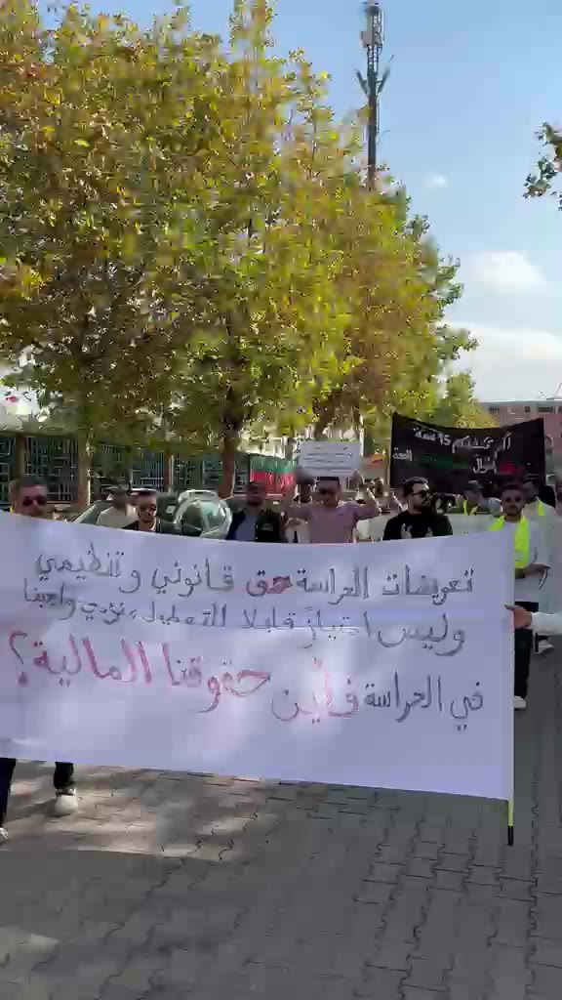

فيديو | فاس: مسيرة احتجاجية خارج أسوار المركز الاستشفائي الجامعي الحسن الثاني دفاعاً عن تعويضات الحراسة

خاض المكتب الجامعي للنقابة المستقلة للممرضين وتقنيي الصحة بالمركز الاستشفائي الجامعي الحسن الثاني بفاس، اليوم الثلاثاء 10 نونبر 2026، وقفة احتجاجية تلتها مسيرة خارج أسوار المركز، تحت شعار «صمتنا انتهى.. ونضالنا مستمر»، وذلك تنفيذاً للبرنامج النضالي المعلن في بيان 17 أكتوبر 2026.
ورفع المشاركون لافتات تطالب بصرف تعويضات الحراسة والمداومة عن سنوات 2024 و2025 و2026، مؤكدين أن «تعويضات الحراسة حق قانوني وتنظيمي، وليست امتيازاً قابلاً للتعطيل».
شاهدوا الفيديو أعلاه.
فتح في تطبيق النقابة